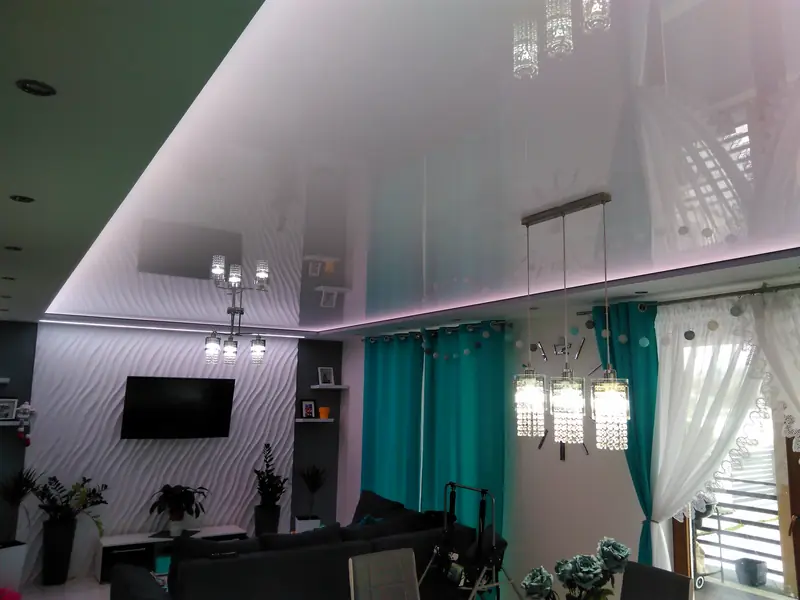
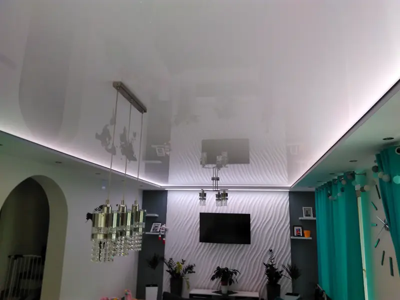
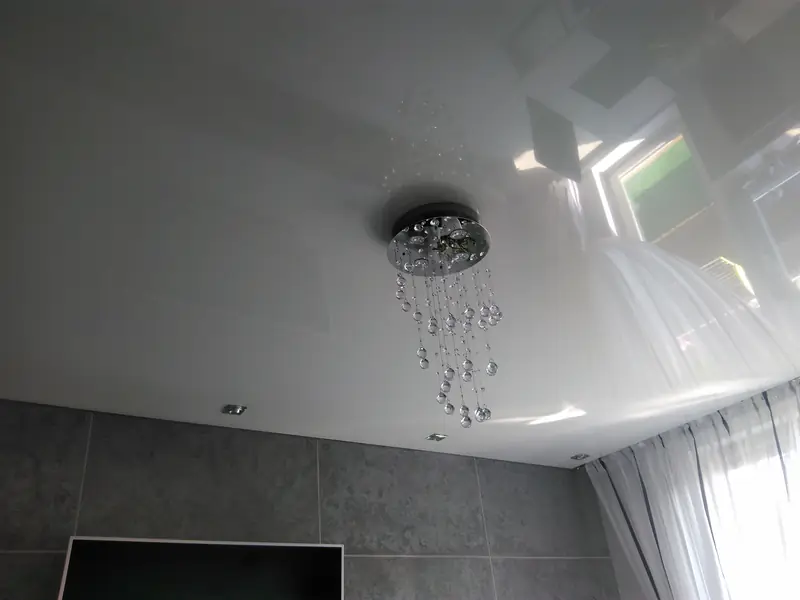
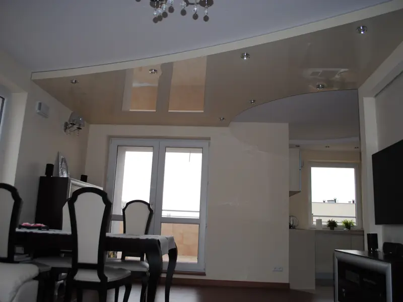

01
Profile ścienne
Podstawowy sposób montażu: profil mocowany do ściany na obwodzie pomieszczenia, powłoka wpinana harpunem. Szczelinę przy ścianie zakrywa uszczelka maskująca, więc połączenie jest równe i czyste.
Gdzie: mieszkania, biura, łazienki, remonty bez kucia